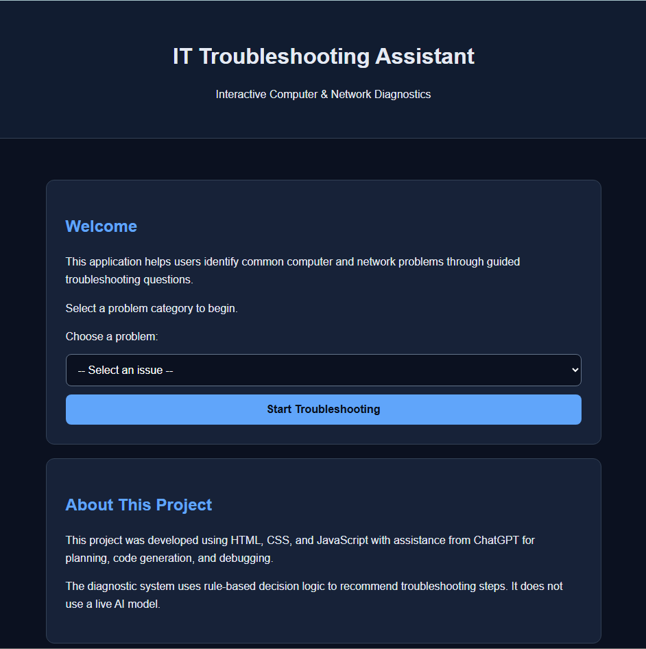
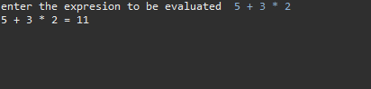
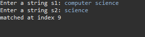

About Me
I am a senior at Lamar University pursuing a bachelor's
degree in Computer and Information Sciences. My academic
experience has allowed me to develop skills in programming,
software development, computer systems, and networking.
I enjoy learning how technology works and applying that
knowledge to solve real-world problems.
Throughout my education, I have worked with programming
languages including Java, C++, and Python. My coursework
has introduced me to topics such as operating systems,
database management, computer networking, and software
engineering. These subjects have helped me understand
both the development of applications and the systems
that support them.
I have also participated in academic software projects
involving command-line applications, software design,
and network simulations. Working on these projects
has helped me improve my debugging, problem-solving,
documentation, and teamwork skills. I enjoy the process
of identifying a technical problem, researching possible
solutions, and developing a working implementation.
My professional interests include software development,
information technology, systems administration, and
cybersecurity. I am interested in opportunities where
I can continue developing my technical abilities while
contributing to meaningful projects. I also value
communication and collaboration because successful
technology projects require more than programming alone.
As I prepare to graduate, my goal is to begin a career
in the technology industry and continue expanding my
knowledge through practical experience. I am motivated
to learn new tools, improve my existing skills, and
become a dependable member of a professional team.
Expected Graduation: Spring 2027
AI-Assisted IT Troubleshooting Tool
An interactive troubleshooting application developed
with ChatGPT assistance. The application guides users
through common computer and network problems using
diagnostic questions and recommended solutions.
Technologies: HTML, CSS, JavaScript
Status: Completed and deployed

View GitHub Code
Launch Live Application
Java Arithmetic Expression Evaluator
A Java console application developed for COSC 2336
Data Structures. The program evaluates mathematical
expressions using two stacks and supports arithmetic
operators, parentheses, and operator precedence.
Technologies: Java, Eclipse

View GitHub Code
Java KMP Pattern Matching
A Java console application developed for COSC 2336
Data Structures. The program implements the
Knuth-Morris-Pratt algorithm to efficiently search
for a substring within a larger string.
Technologies: Java, Eclipse

View GitHub Code